Assessments
Assessments allow you to ask any number of automatically or manually graded questions within your content.
- They allow a student or a teacher to assess how well they are grasping the subject matter.
- Many assessment types are automatically graded, saving precious time for teachers and giving students instant feedback.
- A wide range of assessment types (automatic code tests, multiple choice tests, fill in the blanks, drop-down selection, free text responses and project grading) allow the broadest possible measurement of a student's progress.
- In course scenarios, all assessment responses feed through to a teacher dashboard.
- For multiple choice tests, fill in the blanks and drop-down selection assessment types, each individual assessment can only be answered once, giving a true reflection of understanding rather than being able to carry on answering until the correct answer is achieved.
- When an answer is submitted, the correct answer is shown to the student by default, but this can be disabled if required.
You can choose to weave assessments into the tutorial materials or to create dedicated assessments content.
Example Project
https://codio.com/codio-units/java-example is a project that you can fork into your own Codio account and shows you how to create code tests and setup automatic marking. We would also recommend that you check out our Guides Cheat Sheet and Use Pack to create into your Codio account to review.
Submit buttons and marking as complete
There are two concepts that are important to understand in order to control the way the student submits questions and the way a student marks a project as complete. Click here for a detailed discussion on these.
Adding a new assessment
To add a new assessment, you should first position the cursor in your content where you want it to appear. Then, from the assessments drop-down, select the type of assessment you wish to insert.
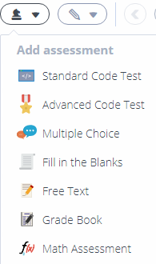
Editing an existing assessment
If you want to edit an existing assessment on the page you are viewing, you should press the settings button in the guide toolbar. In the lower section of the drop down list you will find any assessments on that page. Select one to edit.
Deleting an assessment
Select the page where your assessment is located. Then remove the assessment token from the page. As assessment token looks like this.
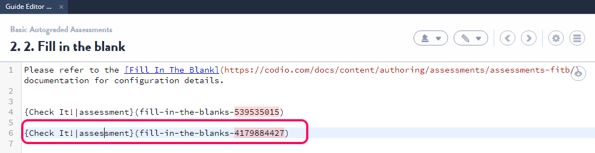
Once deleted, an assessment remains hidden. To fully remove it, press the Settings icon in the authoring toolbar then select the Assessments tab. All assessments present in the current project are listed. Deleted ones are highlighted in red. Press the red x button to delete it.
Autograding when a student completes a assignment
Codio allows you to run a special auto-grading script as soon as an assignment is completed by the student. This special type of assessment is managed from the assignment settings page in a course. Click here for details.
Secure Script execution
If you store assessment scripts in the .guides/secure folder, they will run securely such that the student has no way of either viewing the script or viewing other files in that folder that might contain secure data. Codio ensures that only the original project author is able to access this folder but when it is assigned to Students as an assignment, it is not accessible in any way and the script runs in an ephemeral container isolated from the students assignment.
Any other scripts in the assignment that are not in this folder can be accessible to the students
Student submission options
There are two important settings that control
- the way that a student submits individual questions and
- the way a student notifies the course instructors that a assignment is completed.
The submit button
Until November 20th 2017, each assessment has a submit button beneath the assessment. Once pressed, the answer is autograded, if an MCQ, Fill In The Blank or Free Text question. If the One attempt only setting is selected for the assessment, then the student will be warned that they will not be able to resubmit. If this setting is not selected, then they will be able to resubmit a response.
It is now possible to suppress the submit button entirely. The advantage of this is that students do not need to worry about the effect of pressing the button. They can simply provide a response and then move on to other assessments or pages in the guide.
To suppress the use of the Submit button, you should go to the global settings tab in the guide and disable Use submit buttons.
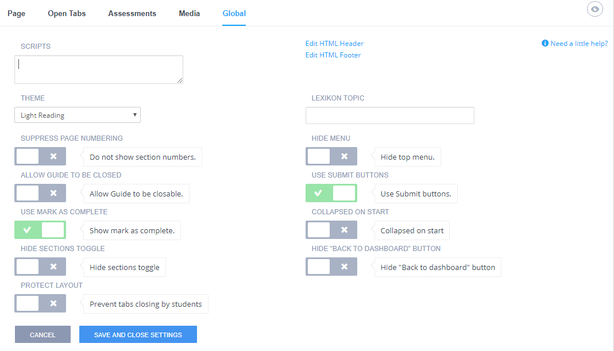
Once the project is marked as complete (see below) then all assessment responses are fully submitted automatically. You should make sure that all students' work is marked as complete either manually or using the automated mark as complete option on the final deadline.
Mark as Complete
To suppress the student Mark as complete action, you should go to the guide global settings (see above screenshot) and disable Use mark as complete.
A student can proactively mark as assignment as complete. This can trigger a assignment level autograde script and it is also flagged up in the teacher dashboard against that student.
The drawback to using the student driven mark as complete option is that once students mark a assignment as complete, they are no longer able to make changes to the assignment, including answering assessments. The advantage is that instructors are able to grade those students' work ahead of a deadline.
If the project has been marked as completed, students can click on the 'completed' button to access the grade feedback but if they wish to view the project, direct them to click on the name of the project on the left hand side. As the assignment is completed they will not be able to edit anything but can view the content.
It is possible to disable the student side mark as complete option entirely so students do not need to think about doing it. It also means that instructors don't get requests from students to re-enable the assignment if they submitted by mistake or decided they want to change something.
If you do not want students to mark as complete, then you will likely want to do one of the following
- Once an arbitrary deadline has been reached, after which you want to start grading student work, you should mark all students' work as complete from the assignment actions area.
- Set an end of assignment date and specify that once the date is reached, the students' work should be marked as complete automatically.
Penalty deadlines
Another powerful feature that you may want to use is Penalty deadlines. This allows you to specify deadlines, before the final grading deadline, where a percentage deduction of the final grade is made. Click here for more information on managing penalty deadlines.
Standard code tests
If you want to write code tests that give you in depth control by allowing you to write your own code to execute tests, then please refer to the advanced code tests. The majority of code tests, however, can be produced without writing any code at all using standard code tests.
Standard code tests are dialog driven. You specify input data and the expected output for that input data. Codio will then execute the student code, supply the specified input data, and compare the expected output to the student code's actual output.
Sample Starter Pack
There is a Starter Pack project that you can add to your account. Click here to install and Use Pack to create into your Codio account to review. This project contains examples for all assessment types as well as a guides authoring cheat sheet.
Basic setup
The configuration fields for an assessment are split into five sections: General, Execution, Grading, Metadata, and Files.
General
The screenshot below shows the basic configuration fields for the General section:
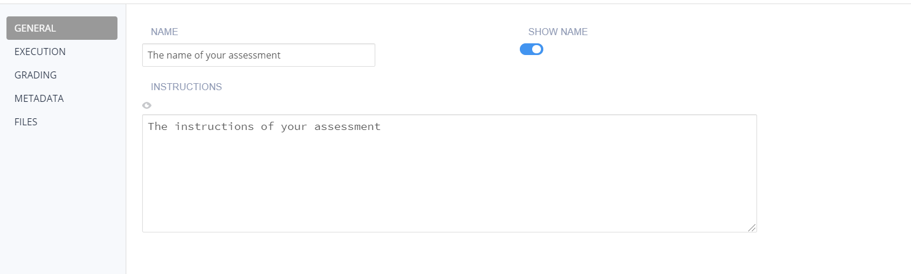
- Name is a short name that describes the test. This name will appear in teacher dashboards, so naming it clearly is important so teachers can see precisely which challenges are successfully met (or not) by students. In many cases, you do not want to see this text appear within the challenge text the student sees. To suppress this text, flip the Show Name switch next to the name field.
- Instructions is the actual text that should be shown to the user, written in Markdown.
Execution
The screenshot below shows the configuration fields for the Execution section:
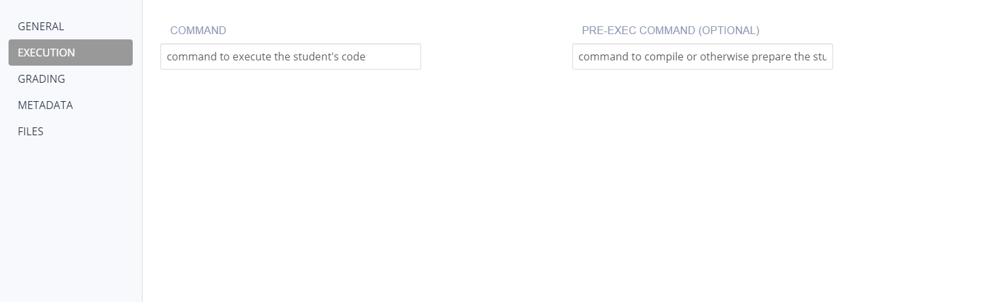
- Command is the command that executes the student code itself. If you store the assessment scripts in the
.guides/securefolder, they will run securely such that the student has no way of either viewing the script or viewing other files in that folder that might contain secure data. - Pre-exec command is the command to execute before you run each test. This will normally be a compile command.
Grading
The screenshot below shows the configuration fields for the Grading section:
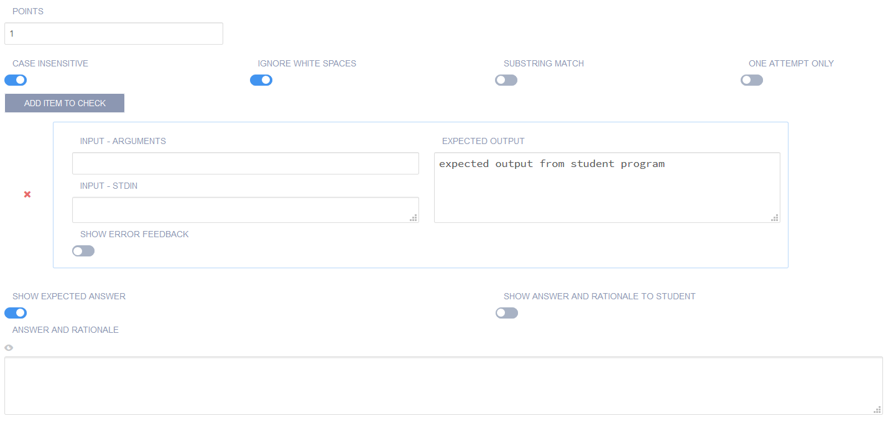
- Points is the score given to the student if the code test passes. You can enter any positive numeric value.
- Case insensitive tells Codio to make a case insensitive output comparison. By default, the comparison will be case sensitive.
- Ignore white space tells Codio to strip out any white space characters (carriage return, line feed, tab etc.) from both the expected output and the student output. It can be very helpful to enable this as it means you do not have to be over precise when specifying the fields or instructions. More information is provided below.
- Substring match tells Codio to perform a substring match when comparing the expected output to the student output.
- One attempt only allows the assessment to run only once. The student will be warned that they will not be able to resubmit. You would usually want to provide a run button or other means for the user to test the code before running the actual assessment.
- Show expected answer will show the students the expected output when they have submitted an answer for the question. To suppress this, flip the switch.
- Answer and rationale is where guidance for the assessment can be entered. This will be visible to the teacher when the project is opened using the TODOOpen as Teacher method. This guidance information can also be shown to students after they have submitted their answer and also if they reload the assignment after marking it as completed. To enable this, flip the Show Answer and Rationale to Student switch below the guidance field.
Metadata
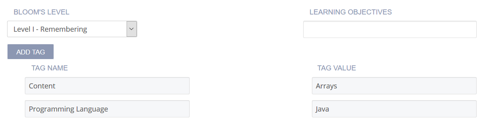
The Metadata section contains fields that further describe the current assessment using a variety of factors:
- Bloom's Level: The options for this field correspond to the general levels of Bloom's Taxonomy, which is a comprehensive system of classification for educational content. Your selection in this field should reflect the Bloom's level of the current assessment.
- Learning Objectives: What you enter in this field should reflect the specific educational goal of the current assessment. It is conventional that learning objective statements begin with "SWBAT" (Students Will Be Able To). For example, if an assessment asks the student to predict the output of a recursive code segment, then its Learning Objectives could be: "SWBAT follow the flow of recursive execution".
- Tags: In addition to Bloom's Level and Learning Objectives, you may add arbitrary tags to an assessment. The existing tags, Content and Programming Language, are required. To add your own tags, click Add Tag and populate their names and values in the empty input boxes at the bottom.
Files
Sometimes, an assessment requires external files to function correctly. For example, if you wish to include an image in an assessment's instructions, your assessment would require the image to be present; if you have a custom grading script for an Advanced Code Test, your assessment would require the script to be present. The Files section allows you to specify the current assessment's file dependencies such that if the assessment is ever distributed to students or other instructors, its dependencies are also included.
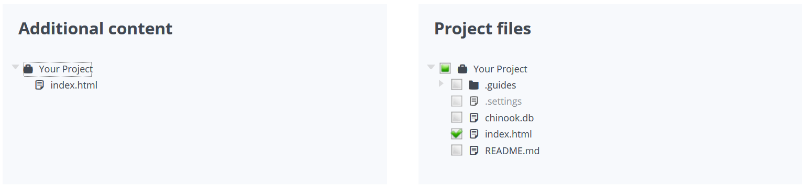
To mark a file to be included with the assessment, simply locate it in the file tree under Project files and tick the checkbox next to its name. Ticked files will appear under Additional content.
Cheating opportunities
If you show the expected output and allow multiple attempts, students may figure out that all they need to do is run the test, look at the expected output and then write the required output data. To avoid this, we recommend that you create one standard code assessment that shows expected inputs and outputs so the student can test. You award no points for this assessment.
You then would create a second assessment that does not show expected output and allows only a single attempt. This way, the student will not know what input data is being passed in and does not have another opportunity to modify their code and re-run the assessment.
Specifying inputs and outputs
The final step in configuring an assessment is to set up the inputs and outputs in the Grading section. There are some important details to understand.
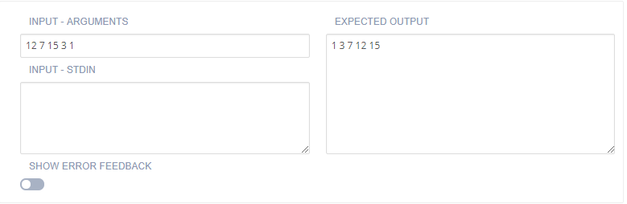
The first set of empty input/output fields is provided. You should choose between supplying your inputs as arguments or as stdin data. These are explained in more detail below.
You should be aware of case sensitivity and whitespace characters as explained above. Generally speaking, using the 'ignore whitespace' setting is a good idea unless you do need to be exact in this respect.
If you only have one input/output pair then the student could write code that simply outputs the expected output without writing any real logic. To protect against this you can create multiple input/output test cases that are run through sequentially.
To add a new test case, press the Add item to check button which generates a new pair.
Inputs using arguments
The easiest way of supplying input data is in the Input - Arguments field as shown in the previous image. The argument data can then be read by the student code.
Inputs using stdin
If you want to handle manual data input cases such as "Enter your Name: " then you would use the Input - Stdin field. This field allows you to supply the data that would normally be entered manually in the console. The following is important to avoid mistakes.
- The input data should have a new line if this would be expected in the actual program execution.
- In the output field, you need to be aware that the prompt text that is displayed to the user appears in
stdoutand so it should be reflected in your output field but without the data entered by the user. Normally, you would not put a new line in the output field between each input prompt as the new line character is generated by the user when pressing the enter key is not a part of the output. - We recommend that you enable the Ignore white space and Substring match options to be more tolerant.
The following image shows how to format input and output fields if you are not ignoring white space or doing a Substring match. Note how the input field only supplied the values to be input, not the prompt itself (which is actually a part of stdout). It is important to accurately account for all spaces and carriage returns.
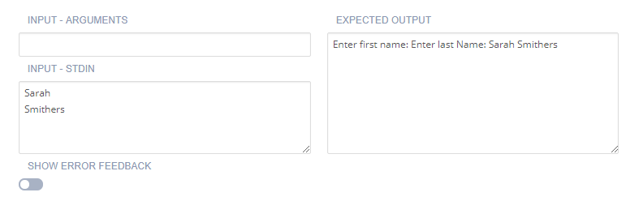
The following image shows the more tolerant approach that has the Ignore whitespace option set. In this case, we have put everything on its own line for readability. The whitespace characters will be stripped out of both the expected output and the student output at runtime.
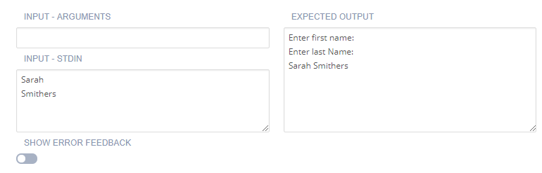
Error Feedback
To provide extended feedback about issues in the student's code, you can enable this option if you wish to show feedback to the student in the event the test fails.
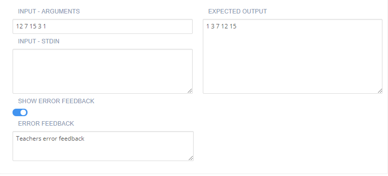
Advanced code tests
Before you read about the advanced code test, please be sure to check the standard code tests as these require no coding at all, are very quick to set up and cover the majority of test cases you are likely to want to create.
The advanced code test assessment type allows you to write code that checks code a student has written. You can write the code in any language you like provided it can be run from the command line.
You should be aware that if students are able to access the command line, they are able to explore the box and find the folder where your test scripts are located. For scripting languages, this would allow them to modify the script. For compiled executables they could theoretically create their own executable and then replace yours with their own one. They would need to know how the callbacks work to succeed at this.
If you want to make your scripts as secure as possible, please click here for information on secure scripts run when an assignment is marked as complete.
Sample Starter Pack
There is a Starter Pack project that you can add to your account. Click here to install and Use Pack to create into your Codio account to review. This project contains examples for all types of auto-graded assessments as well as a Codio authoring cheat sheet.
Test definition
Setting up a Code Test within the Guide editor is very simple. The configuration fields for an assessment are split into five sections: General, Execution, Grading, Metadata, and Files.
General
The screenshot below shows the basic configuration fields for the General section:
- Name is a short name that describes the test. This name will appear in teacher dashboards, so naming it clearly is important so teachers can see precisely which challenges are successfully met (or not) by students. In many cases, you do not want to see this text appear within the challenge text the student sees. To suppress this text, flip the Show Name switch next to the name field.
- Instructions is the actual text that should be shown to the user, written in Markdown.
Execution
You can evaluate student code using a variety of languages and frameworks that are already supported. You can also use a custom grading script.
Supported languages and frameworks:
- Ruby:
rubocoporrspec - Java: JUnit or
checkstyle - Python:
pycodestyleorUnitTest - JavaScript:
jshintorjslint
Using pycodestyle
Before using the pycodestyle option, pycodestyle has to be installed. You may use the following commands to do so:
sudo apt update
sudo apt install python3-pip
sudo python3 -m pip install pycodestyle
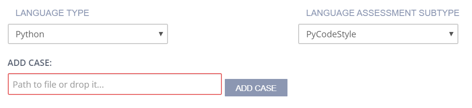
To add individual Python source files whose style should be checked, either enter their relative path to ~/namespace or drag them from the Filetree into the Add Case input box, and click Add Case. You may add as many cases as needed. When the assessment executes, pycodestyle will inspect each added file and output all styling issues that it found.
Using jshint or jslint
Before using them, jshint or jslint must be installed as a Node.js global package. You may use the following command to do so:
sudo npm install -g jshint jslint
To add individual JavaScript source files whose style should be checked, either enter their relative path to ~/namespace or drag them from the Filetree into the Add Case input box, and click Add Case. You may add as many cases as needed. You may also select either JSLint or JSHint in the Language Assessment Subtype dropdown. When the assessment executes, your choice of either jshint or jslint will inspect each added file and output all styling issues that it found.
Custom
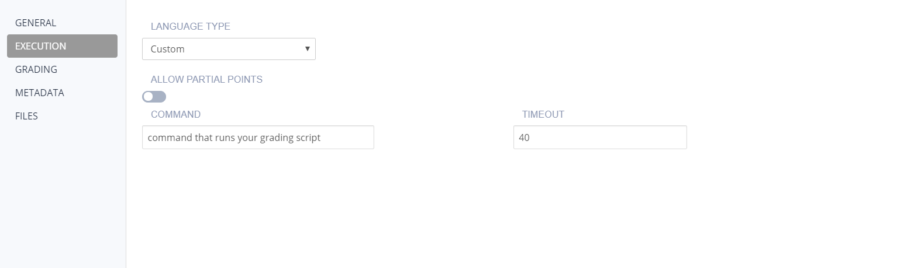
- Command is the command to run to invoke your test. See the section Test code location below for more details. If you store the assessment scripts in the
.guides/securefolder, they will run securely such that the student has no way of either viewing the script or viewing other files in that folder that might contain secure data. - Enabling the Allow Partial Points switch will allow partial points to be given. See the section Partial Score lower down on this page.
- Timeout is the period of time (seconds) the test will run before terminating.
Grading
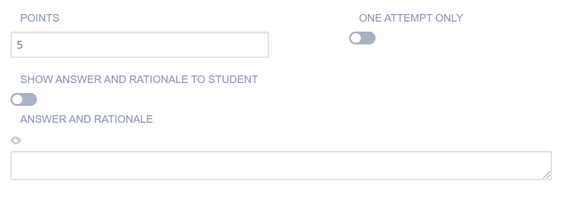
- Points is the score given to the student if the code test passes. You can choose any positive numeric value.
- One attempt only allows the assessment to be run only once. This generally not advised unless you make it clear to the student that a failed test cannot be repeated. You should also provide a Run button in the Guide (or provide other instructions) so the user can test the code before running the actual assessment.
- Answer and rationale is where guidance for the assessment can be entered. This will be visible to the teacher when the project is opened using the TODO(Open as Teacher](/classes/unitmanagement/settings-info/teachersolutions) method. This guidance information can also be shown to students after they have submitted their answer and also if they reload the assignment after marking it as completed. To enable this, flip the Show Answer and Rationale to Student switch below the guidance field.
Metadata
The Metadata section contains fields that further describe the current assessment using a variety of factors:
- Bloom's Level: The options for this field correspond to the general levels of Bloom's Taxonomy, which is a comprehensive system of classification for educational content. Your selection in this field should reflect the Bloom's level of the current assessment.
- Learning Objectives: What you enter in this field should reflect the specific educational goal of the current assessment. It is conventional that learning objective statements begin with "SWBAT" (Students Will Be Able To). For example, if an assessment asks the student to predict the output of a recursive code segment, then its Learning Objectives could be: "SWBAT follow the flow of recursive execution".
- Tags: In addition to Bloom's Level and Learning Objectives, you may add arbitrary tags to an assessment. The existing tags, Content and Programming Language, are required. To add your own tags, click Add Tag and populate their names and values in the empty input boxes at the bottom.
Files
Sometimes, an assessment requires external files to function correctly. For example, if you wish to include an image in an assessment's instructions, your assessment would require the image to be present; if you have a custom grading script for an Advanced Code Test, your assessment would require the script to be present. The Files section allows you to specify the current assessment's file dependencies such that if the assessment is ever distributed to students or other instructors, its dependencies are also included.
To mark a file to be included with the assessment, simply locate it in the file tree under Project files and tick the checkbox next to its name. Ticked files will appear under Additional content.
Test code location
You can place your test code anywhere you like, but if you store the assessment scripts in the .guides/secure folder, they will run securely such that the student has no way of either viewing the script or viewing other files in that folder that might contain secure data. Another suitable location could be to to create a .guides/tests folder.
When specifying a command to run, you could specify it in either of these ways (the ~/workspace folder is assumed if you do not specify a full path).
node .guides/tests/mytest.js
node /home/codio/workspace/.guides/tests/mytest.js
This example uses Node.js, but you can use any language you'd like.
Test framework
Codio provides a simple framework for communicating with the Codio authored content. When defining a test, you specify the points that should be awarded for a successful answer.
Success or Failure
To let Codio know whether the test passed, your code should simply exit with 0. A Bash script would return with exit(0), Node.js with process.exit(0) etc.
To indicate failure, exit with a non-zero value.
Partial Score
Codio also provides a way for you to award a partial score rather than the all or nothing approach described above.
If your test was written using a bash script, it would be done like this.
POINTS=5
curl -s "$CODIO_PARTIAL_POINTS_URL&points=${POINTS}" > /dev/null
A Python script might look like this.
#!/usr/bin/env python
import os, requests, sys
points = 5
url = "{0}&points={1}".format(os.environ['CODIO_PARTIAL_POINTS_URL'], points)
r = requests.get(url)
The score you award should be any value between 0 and the maximum score you specified when defining the assessment in the Codio authoring editor.
Displaying information to the student
You can return text to the user that is shown once the test has concluded. Your test output is captured from stderr and stdout, so for Node.js, for example, console.log('Well done!!') would work.
For success, you might simply return 'Well done!'. For failure, aim to provide as much explanation to the student as possible regarding why they failed.
You can return plain text, but if you want to format your response text, you can return HTML. To do so, make sure you enclose your HTML within <html> </html> tags.
Dashboard score
If Allow Partial Points is disabled and your test returns 0, then Codio will give a dashboard score specified in the Points field; if it returns a non-zero value, then a score of 0 is assumed.
If Allow Partial Points is enabled, then Codio will give a dashboard score based on the request it received at CODIO_PARTIAL_POINTS_URL. If no request was received, then a score of 0 is assumed.
Inputs and outputs to student code
If your assessment requires that inputs are passed into the student code or data should be returned from the student code, then it is your responsibility to implement this. You should make it clear how the student should process your test's inputs and how to return data back to your test.
Multiple choice
Codio support both single and multiple response versions of MCQs.
Assessment definition
The configuration fields for an assessment are split into five sections: General, Execution, Grading, Metadata, and Files.
General
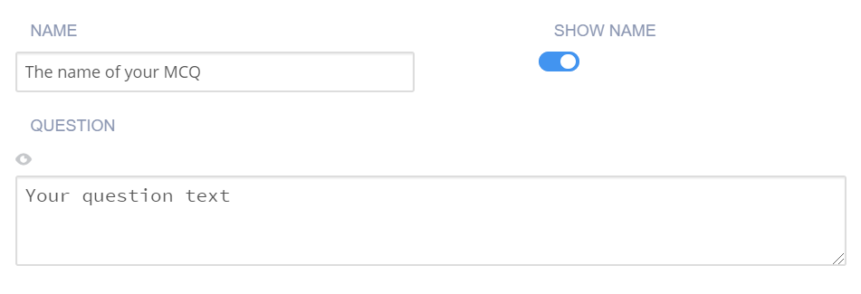
- Name is a short name that describes the assessment. This name will appear in teacher dashboards, so naming it clearly is important so teachers can see precisely which challenges are successfully met (or not) by students. In many cases, you do not want to see this text appear within the challenge text the student sees. To suppress this text, flip the Show Name switch next to the name field.
- Question is the question instruction that is shown to the student.
Execution
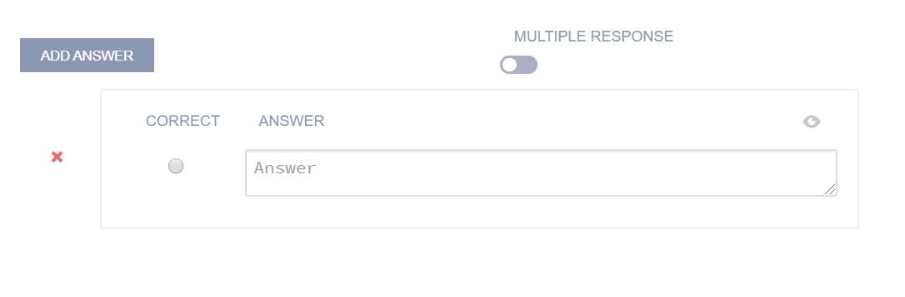
- The Multiple Response slider indicates whether the user can select more than one answer, in which case check boxes are used instead of radio buttons to specify correct answers.
- Answers is where you add as many individual answers as you require. To indicate the correct answer(s), toggle the sliders for multiple response or the radio button for single response.
Grading
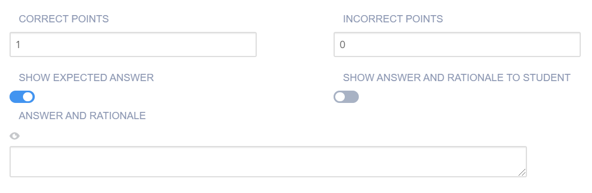
- Show Expected Answer will show the students the correct answer when they have submitted an answer for this question. To suppress this, flip the switch.
- Correct Points is the score given to the student if the student makes the correct selection. You can choose any positive numeric value.
- Incorrect Points is the score to be deducted if the student makes an incorrect selection. Typically, this value will be 0 but you can assign any positive numeric value if you wish to penalize guessing.
- Answer and Rationale is where guidance for the assessment can be entered. This will be visible to the teacher when the project is opened using the TODOOpen as Teacher method. This guidance information can also be shown to students after they have submitted their answer and also if they reload the assignment after marking it as completed. To enable this, flip the Show Answer and Rationale to Student switch below the guidance field.
Metadata
The Metadata section contains fields that further describe the current assessment using a variety of factors:
- Bloom's Level: The options for this field correspond to the general levels of Bloom's Taxonomy, which is a comprehensive system of classification for educational content. Your selection in this field should reflect the Bloom's level of the current assessment.
- Learning Objectives: What you enter in this field should reflect the specific educational goal of the current assessment. It is conventional that learning objective statements begin with "SWBAT" (Students Will Be Able To). For example, if an assessment asks the student to predict the output of a recursive code segment, then its Learning Objectives could be: "SWBAT follow the flow of recursive execution".
- Tags: In addition to Bloom's Level and Learning Objectives, you may add arbitrary tags to an assessment. The existing tags, Content and Programming Language, are required. To add your own tags, click Add Tag and populate their names and values in the empty input boxes at the bottom.
Files
Sometimes, an assessment requires external files to function correctly. For example, if you wish to include an image in an assessment's instructions, your assessment would require the image to be present; if you have a custom grading script for an Advanced Code Test, your assessment would require the script to be present. The Files section allows you to specify the current assessment's file dependencies such that if the assessment is ever distributed to students or other instructors, its dependencies are also included.
To mark a file to be included with the assessment, simply locate it in the file tree under Project files and tick the checkbox next to its name. Ticked files will appear under Additional content.
One attempt only
Codio allows users to make their selections and move on to other content pages or assessments without actually submitting their answer. However, once the answer has been submitted, it cannot be resubmitted. This gives teachers a far clearer understanding of which students are understanding the materials properly. There is little point to tests if the student simply changes the answers until the correct one appears.
Fill in the blank
A 'fill in the blank' question comes in two flavours.
Free Text
The example below shows a typical question where the student has to complete the missing words. This is then auto-marked by the Guide as explained below.
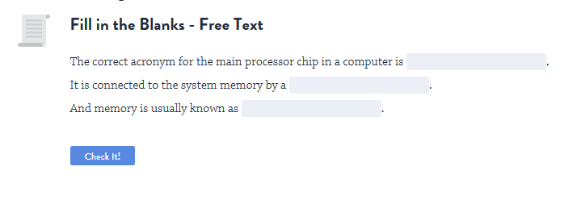
Drop Down
The example below shows a variation, where the student is given a list of possible answers and has to select the right answer from a drop down list of possible answers. This is then auto-graded as explained below.
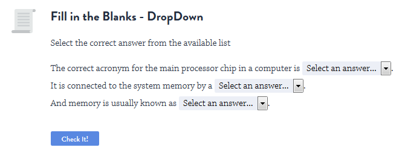
Assessment definition
The configuration fields for an assessment are split into five sections: General, Execution, Grading, Metadata, and Files.
General
- Name is a short name that describes the assessment. This name will appear in teacher dashboards, so naming it clearly is important so teachers can see precisely which challenges are successfully met (or not) by students. In many cases, you do not want to see this text appear within the challenge text the student sees. To suppress this text, flip the Show Name switch next to the name field.
- Instruction contains any general instructions you want to provide to the student.
Execution
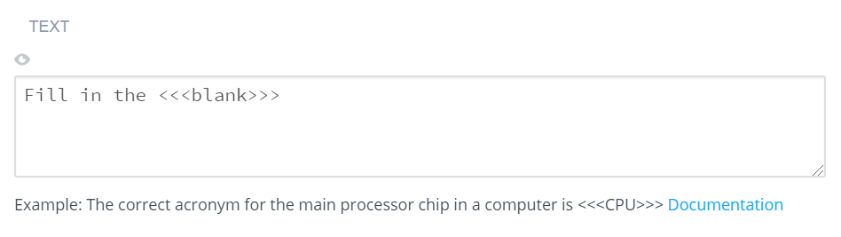
Text is the Markdown that you write including the correct answer specification. Below is an example of how the question should be specified.
A prime number (or a prime) is a <<<natural>>> number greater than <<<1>>> that has no positive divisors other than <<<1>>> and <<<itself>>>.
For a free text question (Show Possible Values slider to the left), Codio shows blank text fields. The student should then enter the correct text. Codio ensures that the response is case insensitive. For obvious reasons, the longer and more complex the correct answer, the easier it is for the student to make minor spelling errors that will then be scored as an incorrect answer.
For a drop-down question (Show Possible Values slider to the right) Codio will gather all correct values (anything within the <<< >>> chevrons) into a drop-down list and offer the same list in each of the answer positions.
Grading
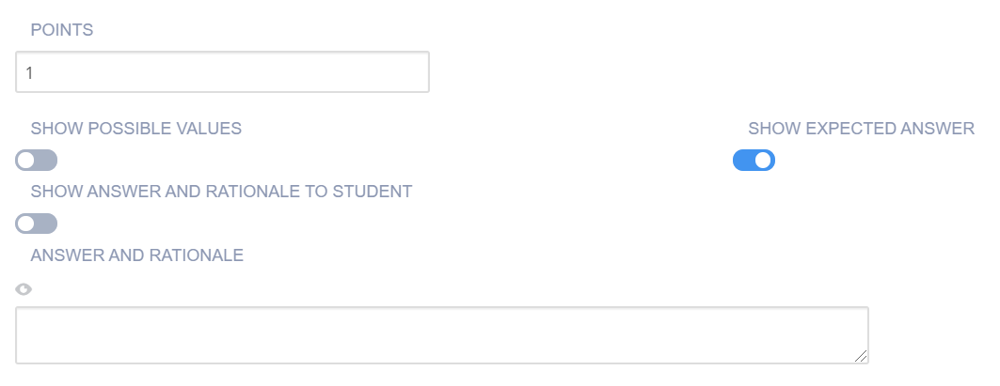
- Points is the score given to the student if the student answers all parts of the assessment correctly. You can choose any positive numeric value. A score of 0 is given if any of the responses is incorrect.
- The Show Possible Values switch determines whether the question is text based (the slider is gray and in the left position) or drop-down based (the slider is blue and in the right position).
- Show Expected Answer will show the students the correct answer when they have submitted an answer for this question. To suppress this, flip the switch.
- Answer and Rationale is where guidance for the assessment can be entered. This will be visible to the teacher when the project is opened using the TODOOpen as Teacher method. This guidance information can also be shown to students after they have submitted their answer and also if they reload the unit after marking it as completed. To enable this, flip the Show Answer and Rationale to Student switch below the guidance field.
Metadata
The Metadata section contains fields that further describe the current assessment using a variety of factors:
- Bloom's Level: The options for this field correspond to the general levels of Bloom's Taxonomy, which is a comprehensive system of classification for educational content. Your selection in this field should reflect the Bloom's level of the current assessment.
- Learning Objectives: What you enter in this field should reflect the specific educational goal of the current assessment. It is conventional that learning objective statements begin with "SWBAT" (Students Will Be Able To). For example, if an assessment asks the student to predict the output of a recursive code segment, then its Learning Objectives could be: "SWBAT follow the flow of recursive execution".
- Tags: In addition to Bloom's Level and Learning Objectives, you may add arbitrary tags to an assessment. The existing tags, Content and Programming Language, are required. To add your own tags, click Add Tag and populate their names and values in the empty input boxes at the bottom.
Files
Sometimes, an assessment requires external files to function correctly. For example, if you wish to include an image in an assessment's instructions, your assessment would require the image to be present; if you have a custom grading script for an Advanced Code Test, your assessment would require the script to be present. The Files section allows you to specify the current assessment's file dependencies such that if the assessment is ever distributed to students or other instructors, its dependencies are also included.
To mark a file to be included with the assessment, simply locate it in the file tree under Project files and tick the checkbox next to its name. Ticked files will appear under Additional content.
Free text
Free text assessments allow students to answer questions in their own words. Teachers are then able to review and manually grade their answers.
Assessment definition
Setting up a free text assessment is very simple. The configuration fields for a free text assessment are split into four sections: General, Grading, Metadata, and Files.
General
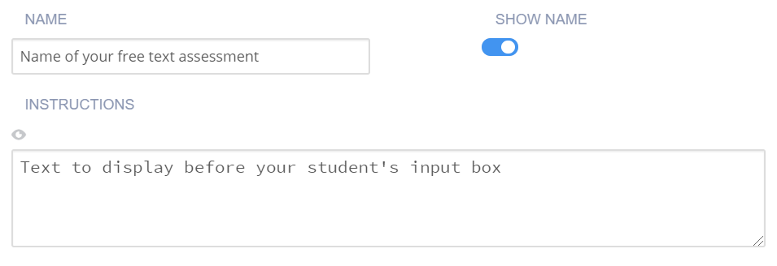
- Name is a short name that describes the assessment. This name will appear in teacher dashboards, so naming it clearly is important so teachers can see precisely which challenges are successfully met (or not) by students. In many cases, you do not want to see this text appear within the challenge text the student sees. To suppress this text, flip the Show Name switch next to the name field.
- Instructions is the actual text that should be shown to the user, written in Markdown.
Grading
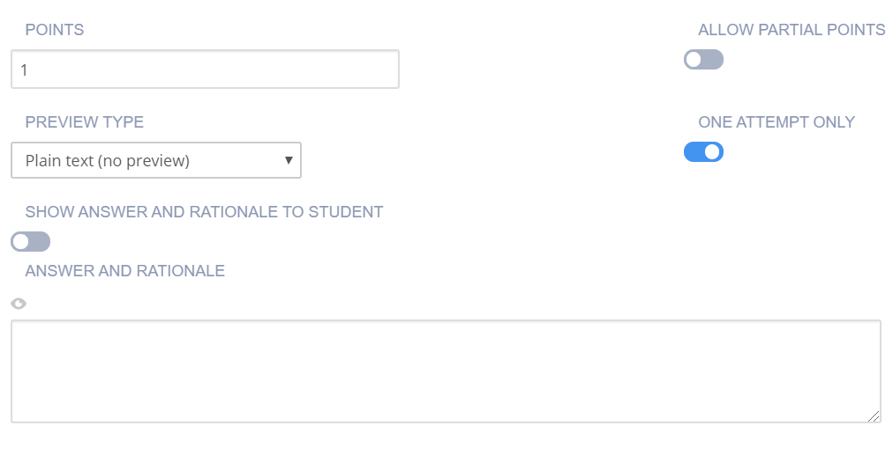
- The Points field is the number of points allocated for the question. You can choose any positive numeric value. Enabling the Allow Partial Points switch will allow the teacher when grading the answer to select the points to give for the students answer.
- Preview Type specified the expected input by the student. Codio offers plaintext and markdown options. LaTeX is also supported. Please refer to the Preview type section below for details.
- One Attempt Only can be used to restrict the student to answering the question once. If not enabled, students will be able to edit their answer until the assignment is marked as Completed.
- Answer and Rationale is where guidance for the assessment can be entered. This will be visible to the teacher when the project is opened using the TODOOpen as Teacher method. This guidance information can also be shown to students after they have submitted their answer and also if they reload the assignment after marking it as completed. To enable this, flip the Show Answer and Rationale to Student switch below the guidance field.
Metadata
The Metadata section contains fields that further describe the current assessment using a variety of factors:
- Bloom's Level: The options for this field correspond to the general levels of Bloom's Taxonomy, which is a comprehensive system of classification for educational content. Your selection in this field should reflect the Bloom's level of the current assessment.
- Learning Objectives: What you enter in this field should reflect the specific educational goal of the current assessment. It is conventional that learning objective statements begin with "SWBAT" (Students Will Be Able To). For example, if an assessment asks the student to predict the output of a recursive code segment, then its Learning Objectives could be: "SWBAT follow the flow of recursive execution".
- Tags: In addition to Bloom's Level and Learning Objectives, you may add arbitrary tags to an assessment. The existing tags, Content and Programming Language, are required. To add your own tags, click Add Tag and populate their names and values in the empty input boxes at the bottom.
Files
Sometimes, an assessment requires external files to function correctly. For example, if you wish to include an image in an assessment's instructions, your assessment would require the image to be present; if you have a custom grading script for an Advanced Code Test, your assessment would require the script to be present. The Files section allows you to specify the current assessment's file dependencies such that if the assessment is ever distributed to students or other instructors, its dependencies are also included.
To mark a file to be included with the assessment, simply locate it in the file tree under Project files and tick the checkbox next to its name. Ticked files will appear under Additional content.
Preview type
The following preview options are available. They dictate the expected input format and whether a fully rendered preview pane appears below the student input. Markdown is useful if the student wants to enter text formatting commands. Here is a reference for Markdown:
- Daring Fireball - the author of Markdown
LaTeX is useful where you want students to enter mathematical formulae in their answers. Click here for information on LaTeX.
- Plaintext - the student is expected to enter ordinary text, without support for markdown formatting. There is no preview window.
- Plaintext + LaTeX - this expects plaintext to be entered, therefore no support for markdown with additional support for LaTeX commands. A preview pane is shown beneath so the student is able to see the rendered LaTeX output.
- Markdown + LaTeX - this supports markdown input with LaTeX support. A preview pane is shown beneath so the student is able to see the rendered markdown and LaTeX output.
Completing a free text assessment
If One Attempt Only is enabled, students will only be able to submit their answer once. If this is not enabled them students will be able to revisit the question and edit their answer until they mark the assignment as completed
Grading free text assessments
To review and grade answers given by student, select the student and a list of all the assessments in the assignment are shown.
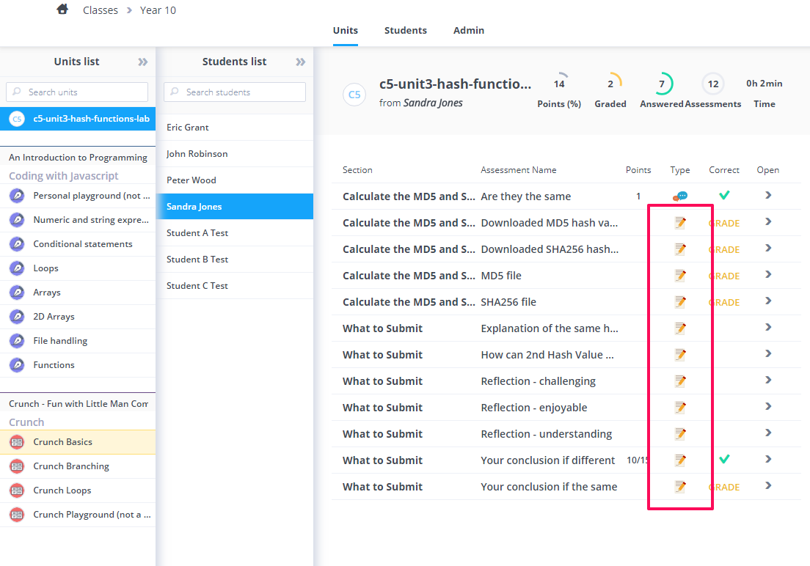
Free text assessments are identifiable from the icon
Click one line and you will then see the question asked of the student and the answer they submitted.
If the question was not set to Allow Partial Points, the teacher can select Correct or Incorrect
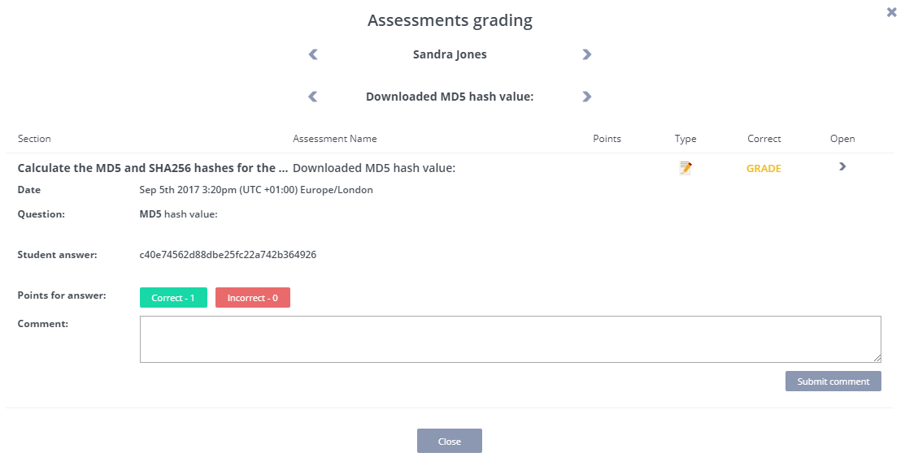
If the question was set to use Allow Partial Points the teacher can select the points to give to the answer up to the maximum Points.
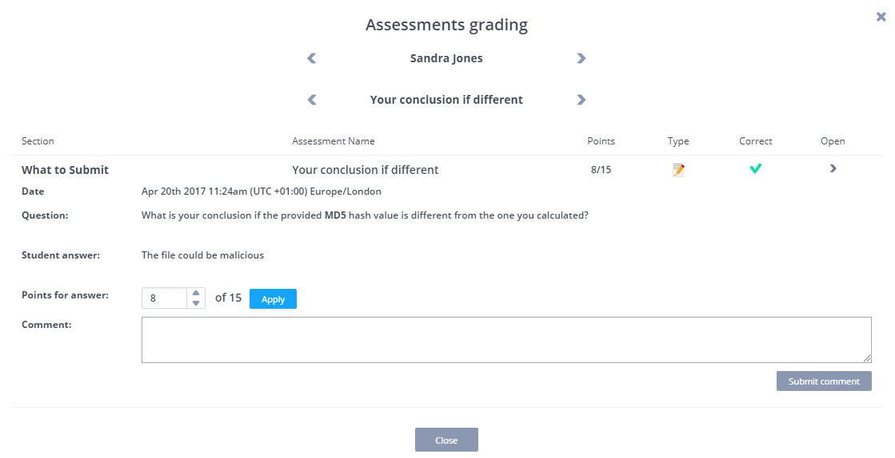
Comments can also be added and will be shown to the student when grades are released. The comment field supports LATex and markdown with a preview area below the text area to allow the grader review the input. The comment field will autoexpand as required
Navigating students assessments
Using the < and > buttons at the top of the assessments grading dialog you can quickly navigate either to the same assessment for other students or to other assessments for the select student
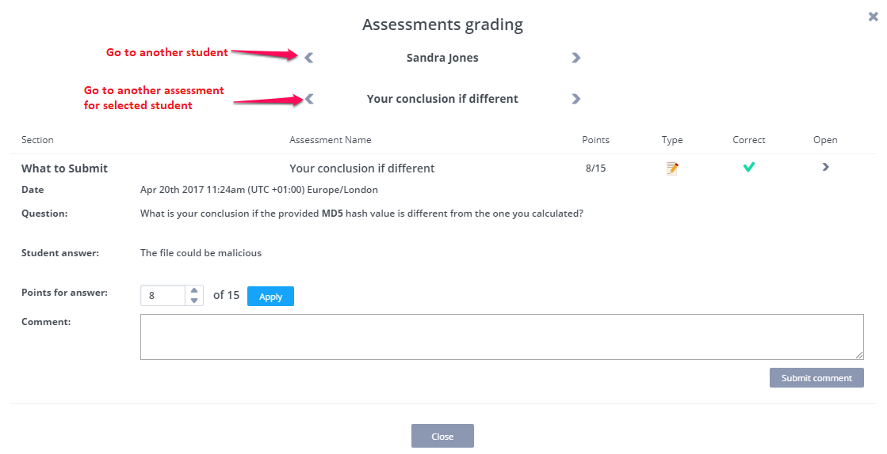
Viewing graded free text assessments
For any free text assessments that have been graded by a teacher in an assignment, you will see the points given and the field in the Correct column checked.
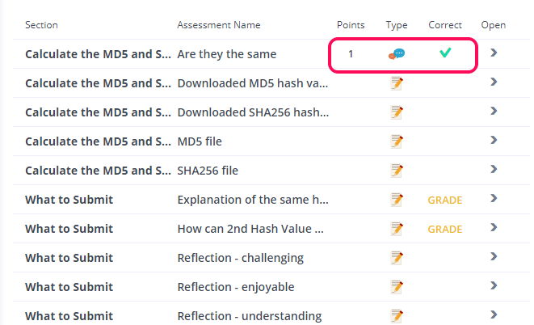
Autograde Free text
The Autograde Free text assessment is similar to the free text assessment but includes a field for a command line to execute a script allowing autograding.
The answer will be passed to the script as stdin.
Assessment definition
Setting up an assessment is very simple. The configuration fields for an assessment are split into five sections: General, Execution, Grading, Metadata, and Files.
General
- Name is a short name that describes the assessment. This name will appear in teacher dashboards, so naming it clearly is important so teachers can see precisely which challenges are successfully met (or not) by students. In many cases, you do not want to see this text appear within the challenge text the student sees. To suppress this text, flip the Show Name switch next to the name field.
- Instructions is the actual text that should be shown to the user, written in Markdown.
Execution
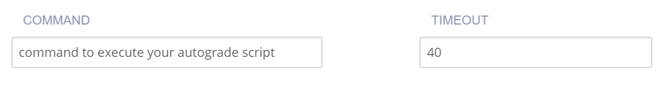
- Command is the command to execute a script to autograde. If you store the assessment scripts in the
.guides/securefolder, they will run securely such that the student has no way of either viewing the script or viewing other files in that folder that might contain secure data. - Timeout is the time to abort the script from executing in the event of a problem.
Grading
- The Points field is the number of points allocated for the question. You can choose any positive numeric value. Enabling the Allow Partial Points switch will allow the teacher when grading the answer to select the points to give for the students answer.
- Preview Type specified the expected input by the student. Codio offers plaintext and markdown options. Latex is also supported. Please refer to the Preview type section below for details.
- One Attempt Only can be used to restrict the student to answering the question once. If not enabled, students will be able to edit their answer until the assignment is marked as Completed.
- Answer and Rationale is where guidance for the assessment can be entered. This will be visible to the teacher when the project is opened using the TODOOpen as Teacher method. This guidance information can also be shown to students after they have submitted their answer and also if they reload the assignment after marking it as completed. To enable this, flip the Show Answer and Rationale to Student switch below the guidance field.
Metadata
The Metadata section contains fields that further describe the current assessment using a variety of factors:
- Bloom's Level: The options for this field correspond to the general levels of Bloom's Taxonomy, which is a comprehensive system of classification for educational content. Your selection in this field should reflect the Bloom's level of the current assessment.
- Learning Objectives: What you enter in this field should reflect the specific educational goal of the current assessment. It is conventional that learning objective statements begin with "SWBAT" (Students Will Be Able To). For example, if an assessment asks the student to predict the output of a recursive code segment, then its Learning Objectives could be: "SWBAT follow the flow of recursive execution".
- Tags: In addition to Bloom's Level and Learning Objectives, you may add arbitrary tags to an assessment. The existing tags, Content and Programming Language, are required. To add your own tags, click Add Tag and populate their names and values in the empty input boxes at the bottom.
Files
Sometimes, an assessment requires external files to function correctly. For example, if you wish to include an image in an assessment's instructions, your assessment would require the image to be present; if you have a custom grading script for an Advanced Code Test, your assessment would require the script to be present. The Files section allows you to specify the current assessment's file dependencies such that if the assessment is ever distributed to students or other instructors, its dependencies are also included.
To mark a file to be included with the assessment, simply locate it in the file tree under Project files and tick the checkbox next to its name. Ticked files will appear under Additional content.
Student Feedback
If your autograde script is to return feedback to your students as they submit the assessment, enable Release Grades Automatically.
Preview type
The following preview options are available. They dictate the expected input format and whether a fully rendered preview pane appears below the student input. Markdown is useful if the student wants to enter text formatting commands. Here is a reference for Markdown:
- Daring Fireball - the author of Markdown
LaTeX is useful where you want students to enter mathematical formulae in their answers. Click here for information on LaTeX.
- Plaintext - the student is expected to enter ordinary text, without support for markdown formatting. There is no preview window.
- Plaintext + LaTeX - this expects plaintext to be entered, therefore no support for markdown with additional support for LaTeX commands. A preview pane is shown beneath so the student is able to see the rendered LaTeX output.
- Markdown + LaTeX - this supports markdown input with LaTeX support. A preview pane is shown beneath so the student is able to see the rendered markdown and LaTeX output.
Completing an autograde free text assessment
If One Attempt Only is enabled, students will only be able to submit their answer once. If this is not enabled them students will be able to revisit the question and edit their answer until they mark the assignment as completed
Examples
A simple Bash script example
#!/usr/bin/env bash
POINTS=0
if [ "${CODIO_FREE_TEXT_ANSWER}" == "answer1" ]
then
POINTS=1
fi
if [ "${CODIO_FREE_TEXT_ANSWER}" == "answer5" ]
then
POINTS=5
fi
if [ "${CODIO_FREE_TEXT_ANSWER}" == "answer10" ]
then
POINTS=10
fi
curl "$CODIO_PARTIAL_POINTS_URL&points=${POINTS}" > /dev/null
A complex Python example
#!/usr/bin/env python
import sqlite3
import tempfile
import os, requests, sys
new_file, filename = tempfile.mkstemp()
conn = sqlite3.connect(filename)
text = os.environ['CODIO_FREE_TEXT_ANSWER']
try:
conn.execute(text)
except Exception as e:
os.remove(filename)
raise e
cur = conn.cursor()
points = 2
try:
# check empty values
cur.execute("insert into users values (?, ?, ?, ?)", (1, None, None, None))
points = points - 2
except sqlite3.IntegrityError as e:
points = points + 2
try:
# check optional years
cur.execute("insert into users values (?, ?, ?, ?)", (2, "2", "2", None))
points = points + 2
except sqlite3.IntegrityError as e:
points = points - 2
try:
# check constraint check for years
cur.execute("insert into users values (?, ?, ?, ?)", (3, "2", "2", -10))
points = points - 2
except sqlite3.IntegrityError as e:
points = points + 2
try:
# check correct values
cur.execute("insert into users values (?, ?, ?, ?)", (4, "2", "2", 10))
points = points + 2
except sqlite3.IntegrityError as e:
points = points - 2
os.remove(filename)
url = "{0}&points={1}".format(os.environ['CODIO_PARTIAL_POINTS_URL'], points)
r = requests.get(url)
Example Instructions
It is recommended that clear instructions are given to students on any specific items that are expected to be included in their answer. The following is an example:
Create a table `users` with the fields:
- id - primary key
- name - text
- email - text
- years - integer
- name and email should be required
- years - optional, but if present - should be more or equal to 0
Expected Solution
CREATE TABLE users(
id int PRIMARY KEY,
name text NOT NULL,
email text NOT NULL,
years int CHECK(years > 0)
);
Math assessments
Codio allows you to set and grade math questions for any type and level of mathematics. As of September 2017, we only offer manual grading of mathematical expressions or proofs.
If you require math assessments, please contact us and we can arrange to enable this for your organisation
Manually graded assessments using free text
To create a manually graded math question, you can use the Free text assessment type. This allows the students to enter expressions or even full proofs and worked answers using Latex. For more information about Latex, please click here.
You can enter Latex in the Question and Answer rationale fields.
You should also set the Preview type drop down to either Plaintext + Latex or Markdown + Latex. Both of these ensure that the student sees a preview pane beneath their answer entry fully rendered in markdown and/or Latex. Please click here to review the free text assessment.
Multiple choice
You can also use the multiple choice assessment type to create answers containing properly rendered Latex expressions.
Grade Book assessments
A Grade book assessment is for manually graded assessments. A student does not need to answer it, and it is available for grading immediately
Comments and points given will be visible to the student when the assessment is graded and the grades are released.
Test definition
The configuration fields for an assessment are split into five sections: General, Execution, Grading, Metadata, and Files.
General
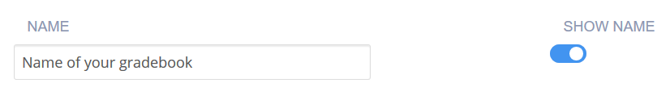
- Name is a short name that describes the test. This name will appear in teacher dashboards, so naming it clearly is important so teachers can see precisely what the assessment is. In many cases, you do not want to see this text appear to the student. To suppress this text, flip the Show Name switch next to the name field.
Execution
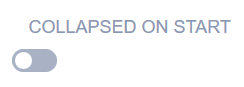
- Collapsed on start allows the assessment field to be collapsed when the page opens.
Grading
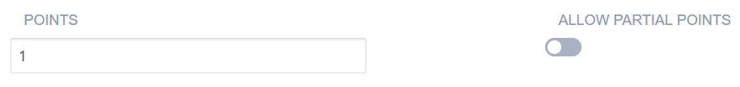
- Points is the score given to the student. You can choose any positive numeric value. Enabling the Allow Partial Points switch will allow partial points to be given.
Metadata
The Metadata section contains fields that further describe the current assessment using a variety of factors:
- Bloom's Level: The options for this field correspond to the general levels of Bloom's Taxonomy, which is a comprehensive system of classification for educational content. Your selection in this field should reflect the Bloom's level of the current assessment.
- Learning Objectives: What you enter in this field should reflect the specific educational goal of the current assessment. It is conventional that learning objective statements begin with "SWBAT" (Students Will Be Able To). For example, if an assessment asks the student to predict the output of a recursive code segment, then its Learning Objectives could be: "SWBAT follow the flow of recursive execution".
- Tags: In addition to Bloom's Level and Learning Objectives, you may add arbitrary tags to an assessment. The existing tags, Content and Programming Language, are required. To add your own tags, click Add Tag and populate their names and values in the empty input boxes at the bottom.
Files
Sometimes, an assessment requires external files to function correctly. For example, if you wish to include an image in an assessment's instructions, your assessment would require the image to be present; if you have a custom grading script for an Advanced Code Test, your assessment would require the script to be present. The Files section allows you to specify the current assessment's file dependencies such that if the assessment is ever distributed to students or other instructors, its dependencies are also included.
To mark a file to be included with the assessment, simply locate it in the file tree under Project files and tick the checkbox next to its name. Ticked files will appear under Additional content.
Parsons Puzzle assessments
What are Parsons Puzzles?
Parson’s Problems are available on Codio as Parsons Puzzles. Parson’s Problems are great formative assessments that ask students to arrange blocks of scrambled code, allowing them to focus on the purpose and flow of the code (often including a new pattern or feature) while not worrying about syntax.
Codio uses a client-side implementation of Parson's Problems named js-parsons, whose official documentation is available here.
Assessment definition
The configuration fields for an assessment are split into five sections: General, Execution, Grading, Metadata and Files.
General
- Name is a short name that describes the assessment. This name will appear in teacher dashboards, so naming it clearly is important so teachers can see precisely which challenges are successfully met (or not) by students. In many cases, you do not want to see this text appear within the challenge text the student sees. To suppress this text, flip the Show Name switch next to the name field.
- Instructions is the actual text that should be shown to the user. It can be written in Markdown or HTML.
Execution
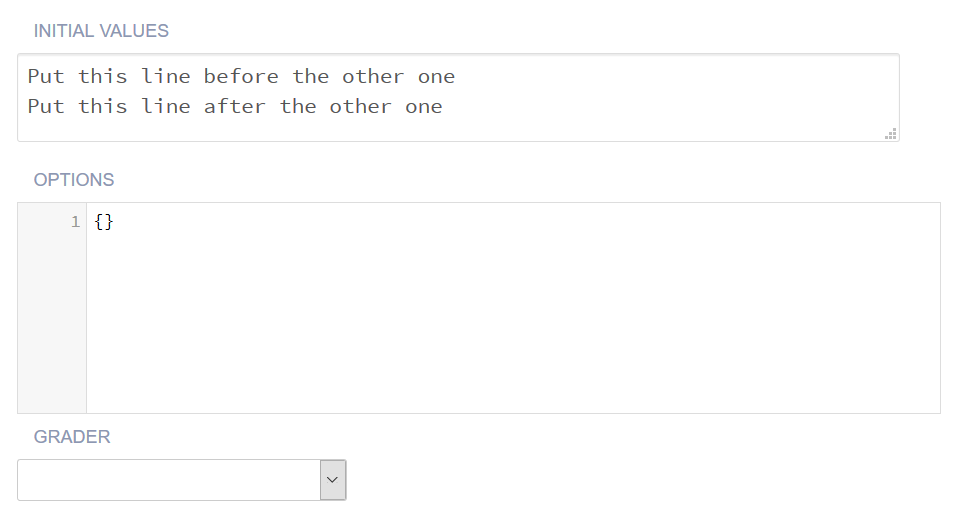
- Initial Values is where you create the initial state of the puzzle for the students.
- Options is where you can set options for the puzzle. For the available options for each grader type, see Parson's Problems documentation.
- Grader is where you select the grader appropriate to the puzzle. Refer to the "Grader Description" section below for more details.
Grading
- The Points field is the number of points allocated for the question. You can choose any positive numeric value.
- One Attempt Only can be used to restrict the student to answering the question once. If not enabled, students will be able to edit their answer until the assignment is marked as Completed.
- Answer and Rationale is where guidance for the assessment can be entered. This will be visible to the teacher when the project is opened using the TODOOpen as Teacher method. This guidance information can also be shown to students after they have submitted their answer and also if they reload the assignment after marking it as completed. To enable this, flip the Show Answer and Rationale to Student switch below the guidance field.
Metadata
The Metadata section contains fields that further describe the current assessment using a variety of factors:
- Bloom's Level: The options for this field correspond to the general levels of Bloom's Taxonomy, which is a comprehensive system of classification for educational content. Your selection in this field should reflect the Bloom's level of the current assessment.
- Learning Objectives: What you enter in this field should reflect the specific educational goal of the current assessment. It is conventional that learning objective statements begin with "SWBAT" (Students Will Be Able To). For example, if an assessment asks the student to predict the output of a recursive code segment, then its Learning Objectives could be: "SWBAT follow the flow of recursive execution".
- Tags: In addition to Bloom's Level and Learning Objectives, you may add arbitrary tags to an assessment. The existing tags, Content and Programming Language, are required. To add your own tags, click Add Tag and populate their names and values in the empty input boxes at the bottom.
Files
Sometimes, an assessment requires external files to function correctly. For example, if you wish to include an image in an assessment's instructions, your assessment would require the image to be present; if you have a custom grading script for an Advanced Code Test, your assessment would require the script to be present. The Files section allows you to specify the current assessment's file dependencies such that if the assessment is ever distributed to students or other instructors, its dependencies are also included.
To mark a file to be included with the assessment, simply locate it in the file tree under Project files and tick the checkbox next to its name. Ticked files will appear under Additional content.
Grader Description
VariableCheckGrader
VariableCheckGrader is a grader that executes the code in the order submitted by the student and checks variable values afterwards.
Expected and supported options:
- vartests (required): array of variable test objects
Each variable test object can/must have the following properties:
- initcode: code that will be prepended before the learner solution code
- code: code that will be appended after the learner solution code
- message (required): a textual description of the test, shown to learner
Properties specifying what is tested:
- variables: an object with properties for each variable name to be tested; the value of the property is the expected value
or
- variable: a variable name to be tested
- expected: expected value of the variable after code execution
TurtleGrader
TurtleGrader is a grader for exercises that draw turtle graphics in Python.
Required options:
turtleModelCode: The code constructing the model drawing. The turtle is initialized to modelTurtle variable, so your code should use that variable. Options that can be specified (that is, optional):turtlePenDown: a boolean specifying whether or not the pen should be put down initially for the student constructed codeturtleModelCanvas: ID of the canvas DOM element where the model solution will be drawn. Defaults tomodelCanvas.turtleStudentCanvas: ID of the canvas DOM element where student turtle will draw. Defaults tostudentCanvas.
Grading is based on comparing the commands executed by the model and student turtle. If the executable_code option is also specified, the code on each line of that option will be executed instead of the code in the student constructed lines. Note that the student code should use the variable myTurtle for commands to control the turtle in order for the grading to work.
UnitTestGrader
UnitTestGrader is a grader that executes student code and Skulpt unit tests
LanguageTranslationGrader
Code "Translating" grader
LineBasedGrader
LineBasedGrader is a grader that treats student answers as correct if and only if they match the order and indentation found in Initial Values. For incorrect answers, it highlights the lines that were not ordered or indented properly.
Sample Starter Pack
There is a Starter Pack project that you can add to your account that includes examples of Parson's Puzzle assessments.
- For Codio.com users: Click here to install
- For Codio.co.uk users: Click here to install
and Use Pack to create into your Codio account to review.
Sense Network
Sense.Education is an AI-Based code analysis package to give students feedback on their code submissions and is supported in Codio in the Sense.Network assessment type.
Students can submit their work and will be able to view feedback from Sense and if One Attempt Only is not enabled can review their code and submit again.
To help and track students activity through sense, custom script can be enabled.
This assessment type is only visible when the sense.network api key is entered in the Organisation>Integrations area. See organisation admin roles for more on this.
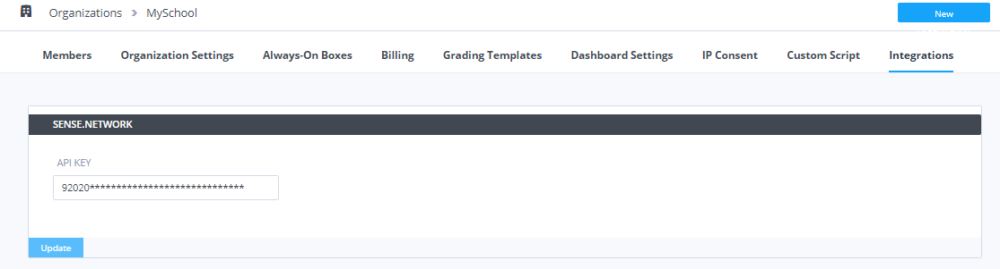
Assessment definition
The configuration fields for an assessment are split into five sections: General, Execution, Grading, Metadata, and Files.
General
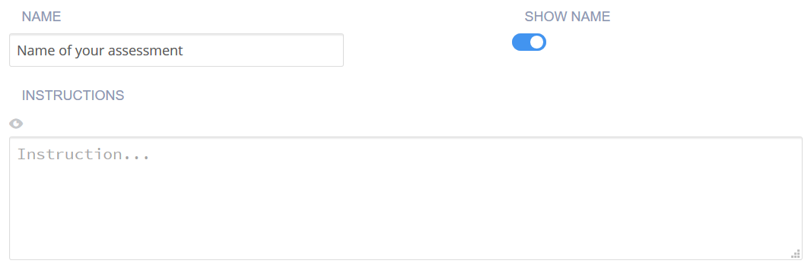
- Name (required) is a short name that describes the assessment. This name will appear in teacher dashboards, so naming it clearly is important so teachers can see precisely which challenges are successfully met (or not) by students. In many cases, you do not want to see this text appear within the challenge text the student sees. To suppress this text, flip the Show Name switch next to the name field.
- Instructions (optional) is the text that should be shown to the user, written in Markdown.
Execution
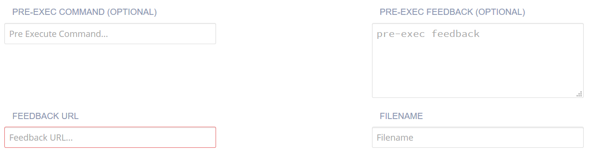
- Pre-exec command (optional) is where a check can be run to confirm any code is compiling as required. If you store the scripts in the
.guides/securefolder, they will run securely such that the student has no way of either viewing the script or viewing other files in that folder that might contain secure data. - Pre-exec feedback (optional) field is used to show feedback if Pre-exec command fails, otherwise will show pre-exec output.
- Sense feedback Url (required) to extract assignment id
- Filename (optional) is the path to the file to pass. If empty, will send the currently opened file
Grading
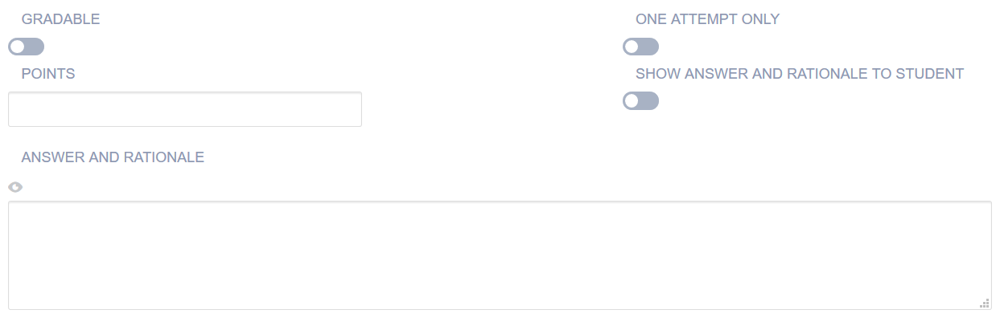
- Gradable enable if the assignment is to be used within the grade total for the assignment. If this is not enabled students can be given feedback on their submission for this assessment without it being graded. Please note Answer and Rationale will not return anything to the student if the assignment is not gradable. When enabled, each submission will override any previous submissions for grading purposes.
- One Attempt Only can be used to restrict the student to answering the question once. If not enabled, students will be able to edit their answer until the assignment is marked as Completed.
- The Points field is the number of points allocated for the question. You can choose any positive numeric value.
- Answer and Rationale is where guidance for the assessment can be entered where the assessment is Gradable. This is not required if the assignment is not gradable. This will be visible to the teacher when the project is opened using the TODOOpen as Teacher method. This guidance information can also be shown to students after they have submitted their answer and also if they reload the assignment after marking it as completed. To enable this, flip the Show Answer and Rationale to Student switch below the guidance field.
Metadata
The Metadata section contains fields that further describe the current assessment using a variety of factors:
- Bloom's Level: The options for this field correspond to the general levels of Bloom's Taxonomy, which is a comprehensive system of classification for educational content. Your selection in this field should reflect the Bloom's level of the current assessment.
- Learning Objectives: What you enter in this field should reflect the specific educational goal of the current assessment. It is conventional that learning objective statements begin with "SWBAT" (Students Will Be Able To). For example, if an assessment asks the student to predict the output of a recursive code segment, then its Learning Objectives could be: "SWBAT follow the flow of recursive execution".
- Tags: In addition to Bloom's Level and Learning Objectives, you may add arbitrary tags to an assessment. The existing tags, Content and Programming Language, are required. To add your own tags, click Add Tag and populate their names and values in the empty input boxes at the bottom.
Files
Sometimes, an assessment requires external files to function correctly. For example, if you wish to include an image in an assessment's instructions, your assessment would require the image to be present; if you have a custom grading script for an Advanced Code Test, your assessment would require the script to be present. The Files section allows you to specify the current assessment's file dependencies such that if the assessment is ever distributed to students or other instructors, its dependencies are also included.
To mark a file to be included with the assessment, simply locate it in the file tree under Project files and tick the checkbox next to its name. Ticked files will appear under Additional content.